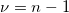
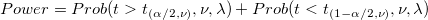
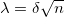
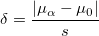

PSS-tTest1-Algorithm
与えられた自由度  および標準偏差 に対して、1群のt検定は、次の式で計算できます。
以上、片側検定

以上、両側検定
ここで、非心度のパラメータは

および

/math-90e72b5bba11abb5d294d2587220648a.png "Power=Prob(t >t_{(1-\alpha ,\nu )},\nu ,\lambda )\,\!")